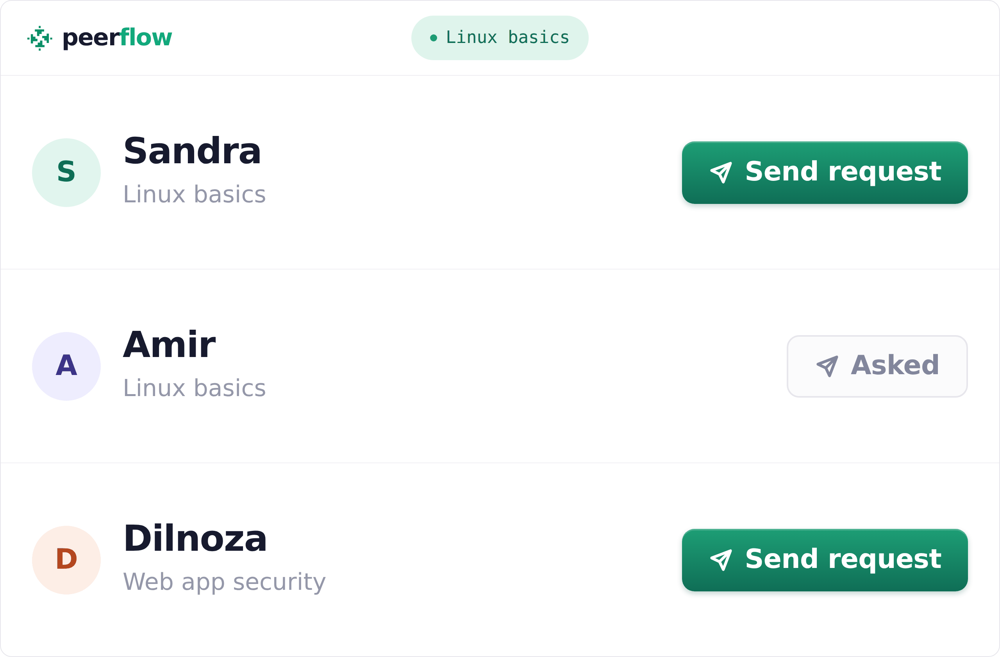
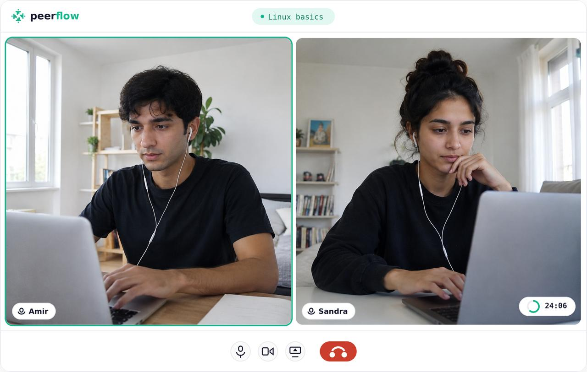

Step one
Choose your path
Choose the IT field you want to learn and describe what you are working toward.
Pick your field, see who else is learning it, and choose someone to meet each week.
Free to join · Beginner friendly · One partner, not a group
Choose the IT field you want to learn and describe what you are working toward.

Browse people on your path, closest match first, and send one a request. They decide.

Once they accept, one of you proposes a time and the other confirms. Then you meet, cameras on.
Use your sessions to work toward a small practical project you can show.
Everyone you'll see here is on the same path, at roughly the same point as you.
Learning something that isn't here? Tell us and we'll look for your partner too.
I grew up in a small town. I didn't need another course — I needed someone who'd show up on Tuesday because I was expecting them.Founder